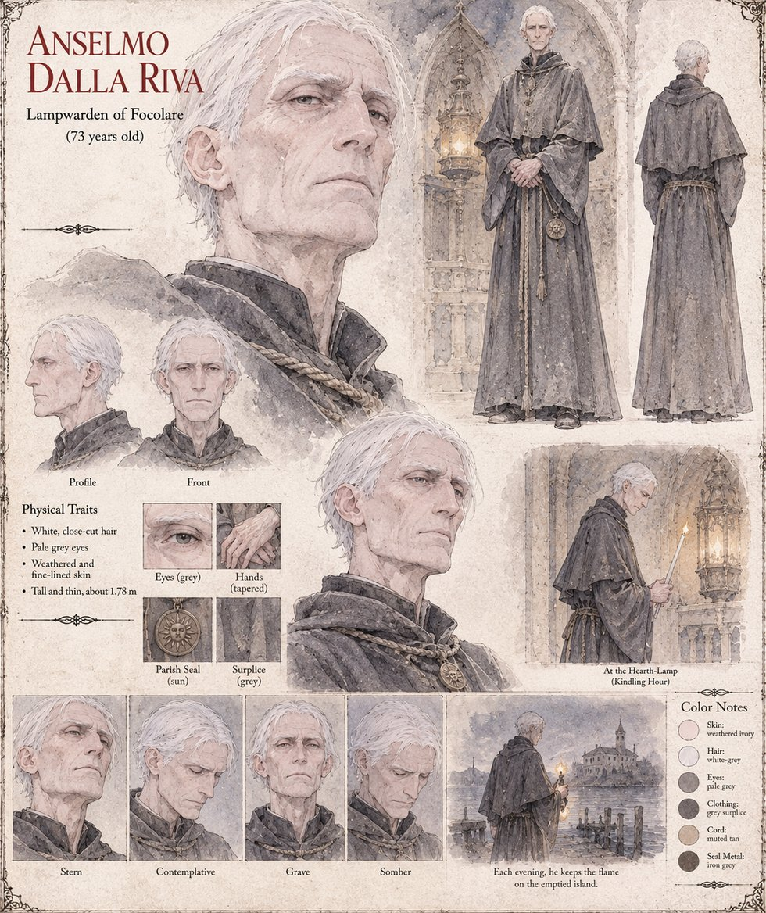

Anselmo Dalla Riva
Lampwarden of Focolare · keeper of the parish seal · stays behind with the lamp-store · 73
Lampwarden of Focolare, seventy-three, as straight as a post that has been struck on the same side for fifty years. At the hour of the Kindling he stands each evening before the Hearth-Lamp in its niche above the well with his taper in his fist. When Agata brings him the parish book with her new column of Excess he reads it twice by the lamp’s own light and asks whether it is correct; told that it is, he says to the flame that in half a century of service he has never once prayed for an error in the parish accounts, and that he is beginning to understand the people who did. He signs the report that night, seals it with the parish’s seal, a small iron sun on a worn handle, and sends it to Torrelume by the next boat with a covering note of three lines that Ottone copies into the letter-book without altering a comma.
When the Order’s answer is read in the church on the second of Mavren, a very old woman at the back asks whether the Sun will know where they have gone. The Lampwarden says that it will, and nobody notices that he does not say how. He asks the Order’s leave to remain in a letter of four lines that costs him, by the blots, a good deal of labour; the Order grants it the way it grants requests it can neither afford to refuse nor approve, by saying nothing. He proposes to keep the lamp-store, the Lit Ground and the cat. Asked on the quay why he will stay on an island that will within the year be a sandbank with a wall around it, he says that somebody ought to be there when the dead come to see whether the light was left on.
He is not there when the boats leave. Eleven winters afterward a salt-raker poling across the shoal at dusk finds him sitting upright in the cold lamp-store with a grey cat across his knees and a single lamp lit at his elbow, which was no longer anyone’s business; the salt-raker, who has never been on Focolare in his life, takes off his hat for reasons he could not have given, and goes away again without touching anything.
The manuscript gives his age, his straight spine, the taper, the parish seal and his staying; it gives no height, hair, eye colour or face, and he appears only in the first two chapters. The sheet’s tall, thin build of about 1.78 m, close-cut white hair, pale grey eyes, weathered fine-lined skin, grey surplice with a cape-collar, rope cord with a tassel and sun-medallion at his chest are its own, as are its panels Stern, Contemplative, Grave and Somber and its scene At the Hearth-Lamp (Kindling Hour). Its second scene, Each evening, he keeps the flame on the emptied island., shows him on a jetty at dusk with a small lit lantern before a church-and-villa island; that is not in the manuscript, which gives only the single lamp at his elbow when he is found. Its (73 years old) follows the manuscript.
“when the dead come to see whether the light was left on”